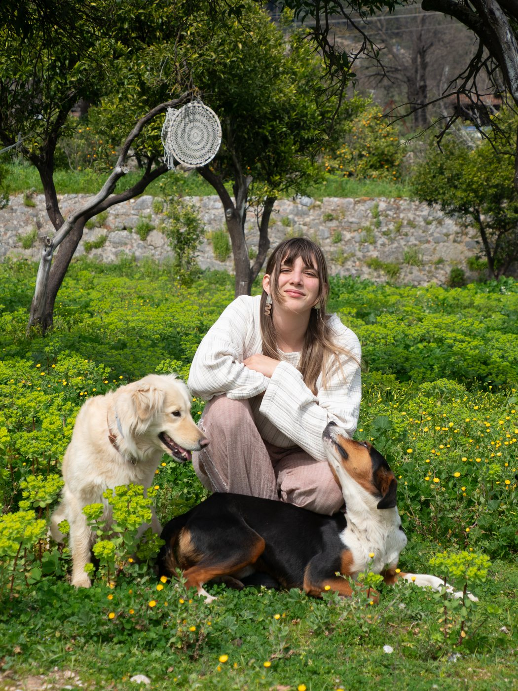

Freedom from chronic pain, without ignoring the world.
A 5 week body program for people who have been told their pain is permanent, or that nothing is wrong. Breathwork, somatic awareness, and Dr. John Sarno's mind-body approach, held with a decolonial lens.

Is this you?
Sound familiar?
- Your scans say "normal." Your pain says otherwise.
- It lingers, flares, or shifts without warning, and no one can tell you why.
- You've been told it's permanent.
- You're drained by endless treatments and quick fixes that don't last.
- You've begun to fear your own body, or movement itself.
- You sense your emotions are connected to it, but don't know where to start.
Your body isn't broken.
It's paying attention.
When you listen instead of fear, and respond instead of resist, the cycle can slowly begin to shift.
The program
Freedom from chronic pain
Over five weeks, in 5 1:1 sessions, we move through four phases, shaped around your pain and your life.
Week 1
Believing it's possible
We start with the shift that changes everything: coming to deeply believe you have the power to live free of pain.
Weeks 2 to 3
Listening
We slow down and learn to hear what your nervous system is telling you, with breath and somatic awareness.
Week 4
Meeting pain with safety
We practice meeting pain and emotion with safety instead of fear, so the old protective pattern can loosen.
Week 5
Rebuilding trust
We rebuild trust in movement and rest, and make a plan you can keep using on your own.
What's included
- Weekly 1:1 sessions, online
- Recorded breathwork and somatic practices tailored to your needs
- Between session support with voice notes and messages
Pricing
All my sessions are priced on a sliding scale, based on where you live and your income. If we are meant to work together, we will make something work.
I only take 4 clients at a time, so each person gets my full attention.
"Thank you so much for being by my side through this process, Leyla. For a year I tried physiotherapy, doctors, medication, creams, whatever there was, and still I didn't have a single day without pain. Everything only gave temporary relief. At the moment I thought, 'please, let there finally be a real solution,' you came into my path, and that was my miracle. I hope you reach many more people like me and remind everyone that healing is first of all within us. If my pains have passed now, and if I understand myself and what my body is trying to say better, it's thanks to your support and compassion. Thank you so, so much."
About me
I've moved through this pain many times.
At 12, I was diagnosed with advanced scoliosis. Doctors told me I'd either live in pain my whole life or have surgery to rearrange my spine, and I grew up afraid of my own body. In 2024, pain from my lower back down my leg left me barely able to walk for almost a year. Back home in Akyaka, on the Aegean coast, I found Dr. John Sarno's work, turned toward my pain instead of fighting it, and found my freedom. Now I walk alongside people on the same path.
SarnoXSachs Chronic Pain Practitioner Training · Breathwork Therapist, Inspire Breathwork · Cognitive Science, University of Southern California

Questions you might have
So… is this pain all in my head?
No. The pain is not imagined, it is a real, physical experience, but its origin is in the nervous system, not in structural damage.
Do I need perfect scans or a doctor's clearance first?
It can be helpful to have a doctor rule out anything serious, that peace of mind often supports the process. That said, this work is safe, educational, and has no contraindications, so you're welcome to begin whether or not you choose to seek further medical tests.
What if I have a real diagnosis, like herniated disc, scoliosis, arthritis, or IBS?
Mind-body work does not deny these findings, but research and experience show that many people with the same diagnoses live pain-free. What matters is the role your nervous system is playing in amplifying or even creating the symptoms.
How many sessions will it take?
Everyone's journey is unique. Some people feel relief after a single insight; others take weeks or months of steady practice. I usually recommend 4 to 6 sessions to build a strong foundation.
What if I don't get better?
This is one of the most common fears. This work requires persistence, and setbacks are part of the process. I'm confident in the tools, but your nervous system may resist at first. The good news: countless people around the world, myself included, have found freedom this way, and I believe you can too.
What is mind-body pain commonly mistaken for?
Mind-body pain is often mistaken for medical or structural conditions such as herniated or bulging discs, scoliosis, arthritis or joint degeneration, fibromyalgia, chronic fatigue, irritable bowel syndrome and other gut issues, migraines or tension headaches, pelvic pain syndromes, carpal tunnel or repetitive strain injuries, autoimmune-like flare-ups, and many more.